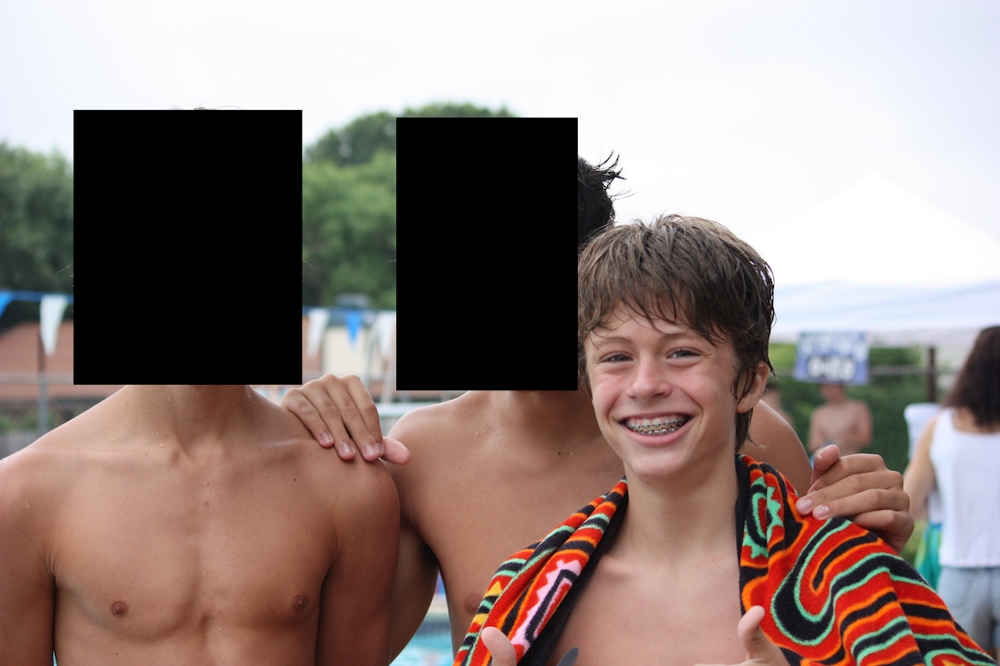
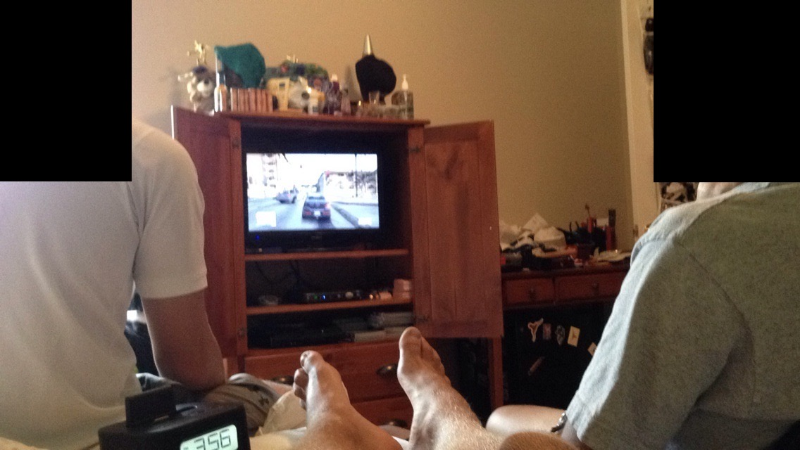
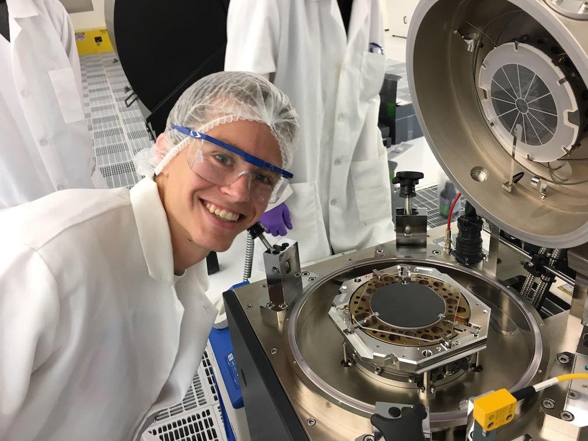
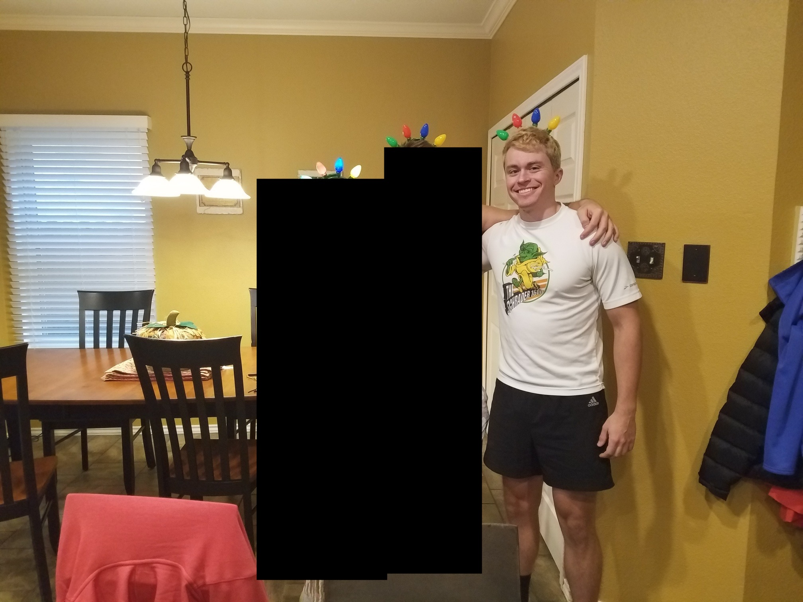
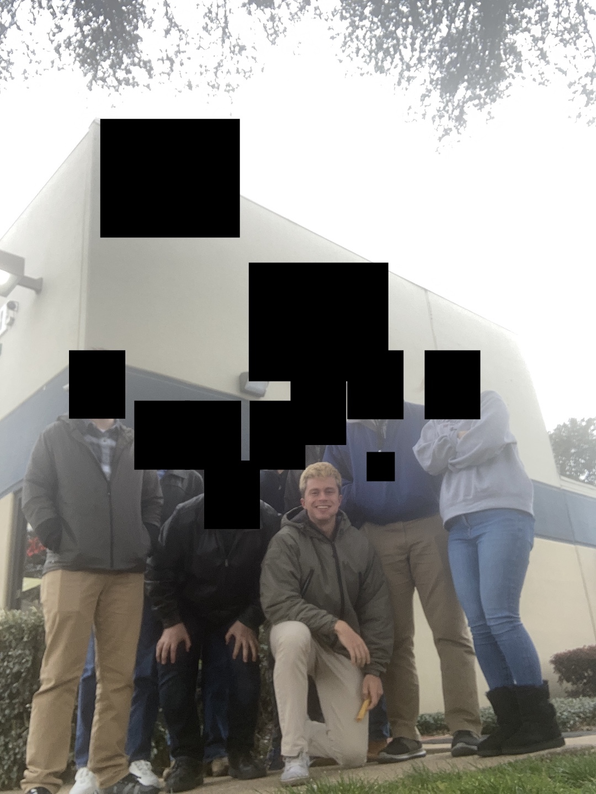

Recognition of reality can reduce future heartache.
I
It's 5:00pm on a school night in 2009 and I'm in sixth grade. I hit up my friend down the street and we play basketball for a few hours, chatting about god-knows-what. It's 8:30pm on a Friday and I'm walking around the neighborhood with another friend, picking oranges off people's trees and ding-dong-ditching the innocent. It's 7:00pm on another school night and we're playing Shaun White Snowboarding in his room listening to the early mixtape of what would eventually be a household name in the rap community.
Now each of us live in separate states and (obviously) no longer hangout on a daily basis. We have our own careers and I haven't spoken to one in years, although I hit up the other every few months.
II
It's the summer of 2014 and I'm having the time of my life. Going over to my girlfriend's house every day to hang out and swim, chilling with my best friends almost every day, exercising and eating like crazy. We made tie-dye shirts, went on late-night IHOP runs, played basketball in our friend's house whose family wasn't home at the time, jumped around at concerts, all among other silly teenage decisions that I'll leave up to the reader's imagination.
Now I still do some of that stuff, but it's not the same as it felt in the summer when I didn't have a job to go to in the morning (or at least cared about doing well) and my body could withstand whatever I threw at it.
III
It's 2019 and I'm working my ass off at my college job. I love the people, the work, the atmosphere, the knowledge, all of it. I devour everything with vigor and am still left unsatisfied. I feel immense pride at the fruits of my labor showing immediate dividends to the employees and researchers alike, enough so that I spend extra hours every week continuing to work, to make things better, not just for them, but for myself.
Now my role is less fulfilling—I'm merely a small, yet still crucial, cog in a corporate system that expects me to go above and beyond with my work with very little recognition of doing so. There's always the thought of working and not socializing looming over my shoulder, and the interactions aren't like they were at AggieFab.
IV
It's the summer of 2020 and while I'm definitely anti-streamer, I was guilty of watching a couple of streams during the COVID lockdowns. And man, did it feel like everyone was there. There were huge weekly Warzone tournaments that the biggest streamers played in and the viewing numbers were insane (at least for back then): streamer1 had an average of 45,000 viewers, streamer2 had 23,000, and streamer3 had 11,000.
Now each streamer averages, 23,000, 11,000, and 8,000, respectively. Verdansk is no longer plastered all over Twitch, nor is Warzone as a whole. The community-like feel is gone, empty.
I
It's 2024 and my cousin and his girlfriend, two of my better friends, are moving out of my city for better career opportunities after a hellacious couple of years. No longer will we have weekday dinners in which I occasionally pull a [name of their apartment complex], the act of intending to only stay for a few hours before going home to get a good night's rest but actually staying way too late and drinking too much to the point of me having to stay over and showing up to work the next morning in the same clothes, except this time looking disheveled.
Now I make it a point to reach out regularly, to schedule impromptu dinners at their apartment or my house or the nice restaurant we've been talking about going to for ages but haven't made the reservations for. I say yes to their invitations out with their friends in an effort to spend more time with them.
II
It's 2026 and the original set of coworkers I started with are no longer in my group, having moved to a different role or company entirely. I like the new set, but things aren't the same. I can't make the same jokes, push the same buttons, argue the same points that I could with the OGs. The culture has shifted and with it my satisfaction with the group and thus my career.
Now I try to schedule team bonding events on a semi-regular basis, whether it be lunch or a happy hour or a dart tournament. I make people pose for funny pictures and make memes of them afterwards. I edit the morning safety message to include something more humor-forward to start the day off on a less dreary note.
As good as Andy Bernard's quote "I wish there was a way to know you're in the good old days before you've actually left them" sounds, it's wrong because the "good old days" can be recognized before they're gone. Look back on moments in your life as I did in my past and future stories. Think about the satisfaction they gave, the happiness and joy. Couple this with the fact that nothing lasts forever and there you have it: that time period will eventually become the good old days. We all have chapters in our lives, all of which will eventually end. Mine went something like elementary school>middle school>high school>college>career1 with plenty of subsections within each—the grouping is subjective.
This obviously takes some amount of self-awareness to realize how good the time is. Too often people are enjoying themselves but fail to truly savor the moment and soak it all in. Taking this step back has allowed (at least) me to enjoy small moments even more than if I were to just breeze right through them.
I've partially installed a trigger-action plan to help me enjoy these moments. Whenever I feel greater-than-normal happiness I stop, tell myself something along the lines of "this is really nice", then continue on with what I was doing before.
Make an ordered list of things you enjoy doing, with whom, and when you expect them to end. Prioritize all future activities taking into account enjoyableness and end date. For example, if something is 10 enjoyableness but you'll have access for 10 years (10-10), prioritize the 7.5-1 in the meantime. (I'm sure some will argue you should blindly choose the activity with the greater enjoyableness value, but I disagree.)
Find a way to remind yourself of how nice a moment is when you're in it.
Recognize and come to terms with the fact that nothing lasts forever. Circumstances change, people change, people die, and life moves on for everybody. And when two people are moving in separate directions, the distance gets further twice as fast.